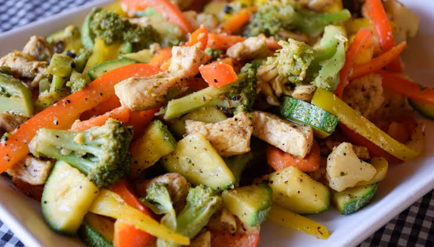

Pollo Salteado con Verduras

El pollo salteado con verduras es una receta rápida, equilibrada y llena de color. Combina pechuga de pollo con vegetales frescos para obtener una comida completa, nutritiva y lista en apenas 15 minutos.

El pollo salteado con verduras es una receta rápida, equilibrada y llena de color. Combina pechuga de pollo con vegetales frescos para obtener una comida completa, nutritiva y lista en apenas 15 minutos.